Aquí dejaremos el TOP de los mejores 15 DJs actualmente, según la famosa revista DJMAG
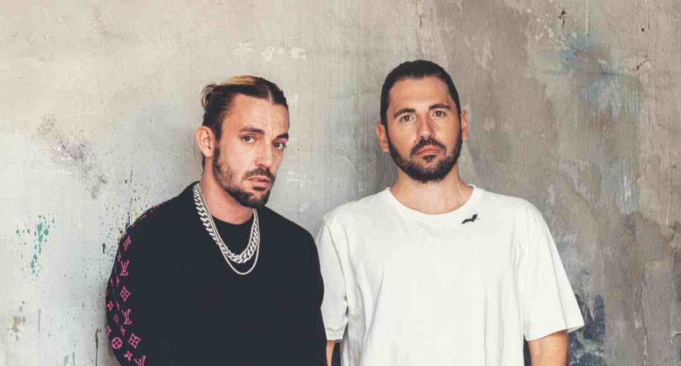
Dimitri Vegas & Like Mike
Dimitri Vegas & Like Mike es un dúo belga compuesto por los hermanos Dimitri Thivaios (Dimitri Vegas) y Michael Thivaios (Like Mike).
Martin Garrix
Martin Garrix es un DJ neerlandés perteneciente al sello discográfico Spinnin' Records.
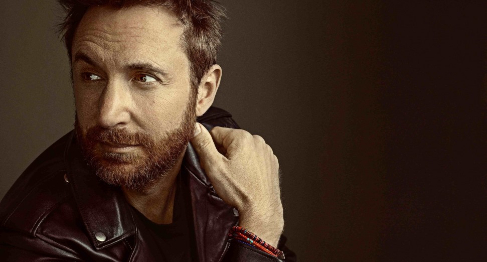
David Guetta
David Guetta es un DJ francés de música electrónica especializado en producir música house.
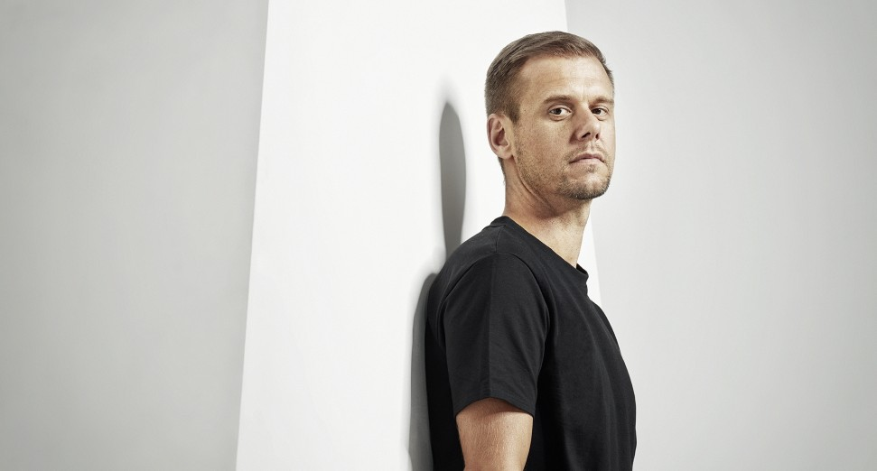
Armin Van Buuren
Armin van Buuren es un DJ holandés y productor de música trance entre otros subgéneros de música electrónica.
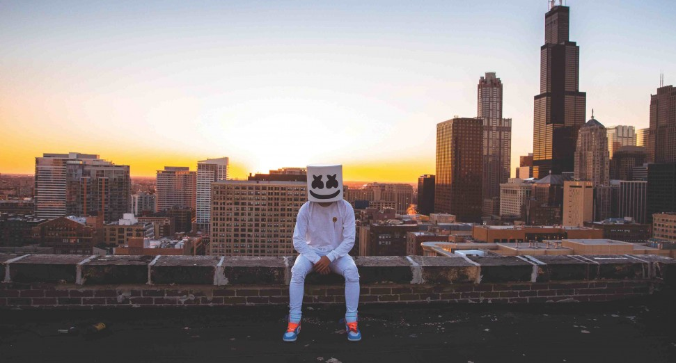
Marshmello
Marshmello es un DJ y productor de música electrónica y dance.
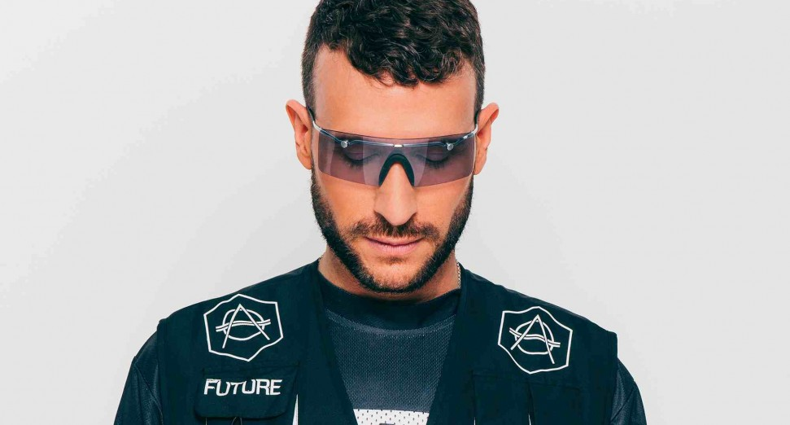
Don Diablo
Don Pepijn Schipper, mejor conocido como Don Diablo, es un DJ productor y compositor holandés de música electrónica.
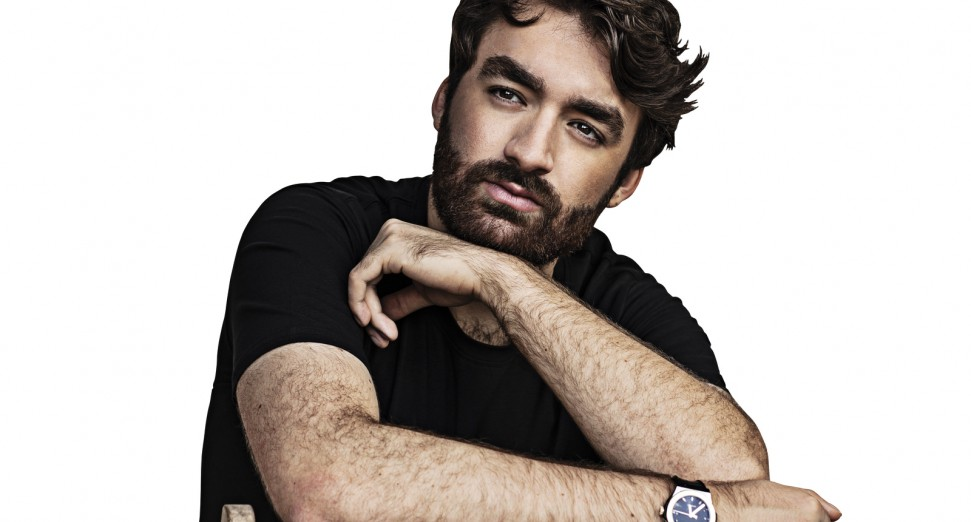
Oliver Heldens
Oliver Heldens es un DJ y productor neerlandés, es uno de los máximos referentes del Tech House y Future house.
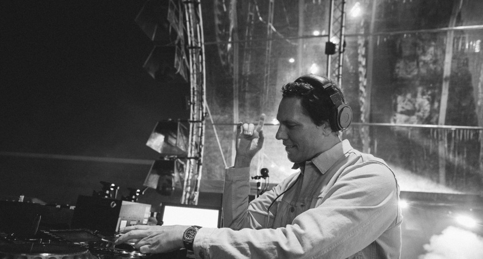
Tiësto
Tiësto considerado por muchos el mejor DJ de música electrónica bailable. Tiësto ha dominado las sutilezas de su arte durante el curso de su larga e imparable carrera.
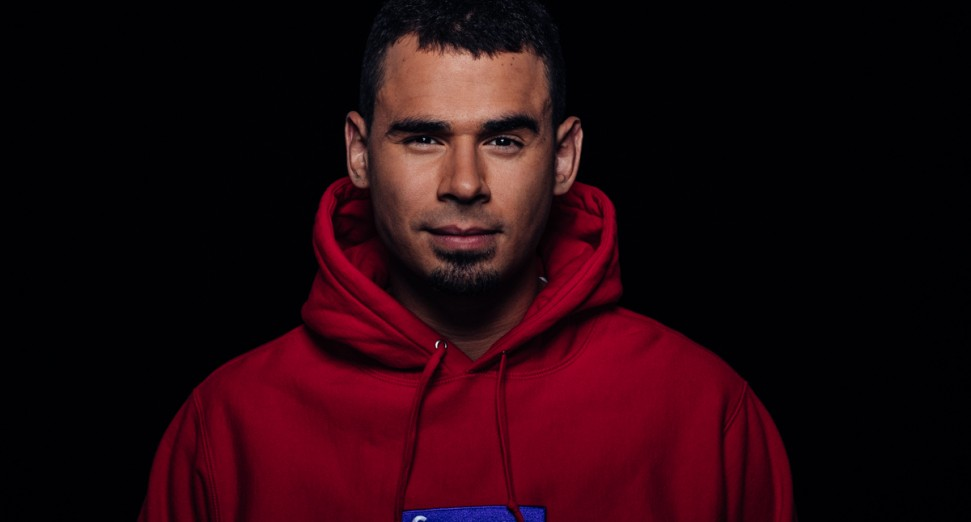
Afrojack
Nick van de Wall, mejor conocido como Afrojack, es un DJ y productor discográfico de música electrónica de origen neerlandés.
Steve Aoki
Steve Aoki: DJ, músico, y productor musical estadounidense de electrohouse y es el fundador del sello discográfico Dim Mak Records.
Alok
Alok Achkar Peres Petrillo, más conocido como Alok es un DJ, compositor y productor brasileño.
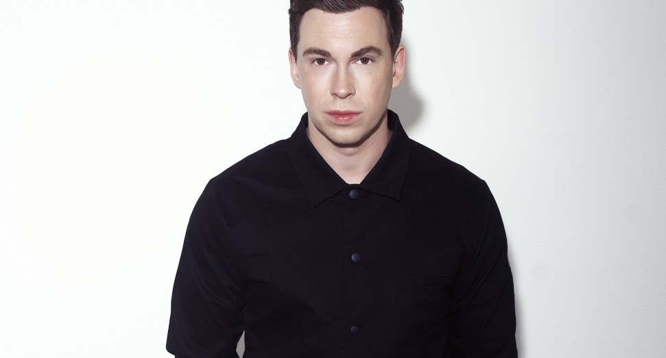
Hardwell
Robbert van de Corput, mejor conocido como Hardwell, es un DJ y productor holandés orientado al género Electro House.
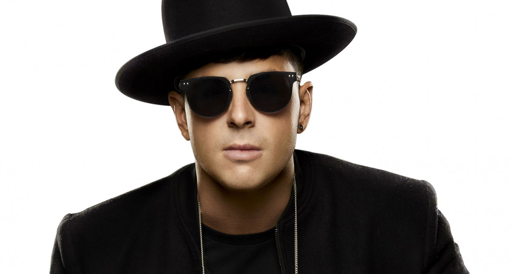
Timmy Trumpet
Timothy Jude Smith, conocido artísticamente como Timmy Trumpet, es un DJ australiano de los géneros house, bounce, Hardstyle y psytrance.
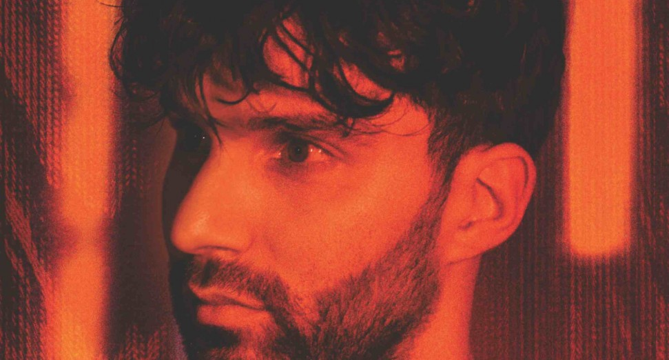
R3hab
Fadil El Ghoul, más conocido artísticamente como R3hab, es un DJ y productor discográfico neerlandés de origen Marroquí.
KSHMR
Niles Hollowell-Dhar, más conocido como KSHMR, es un DJ y productor indo-estadounidense de EDM.